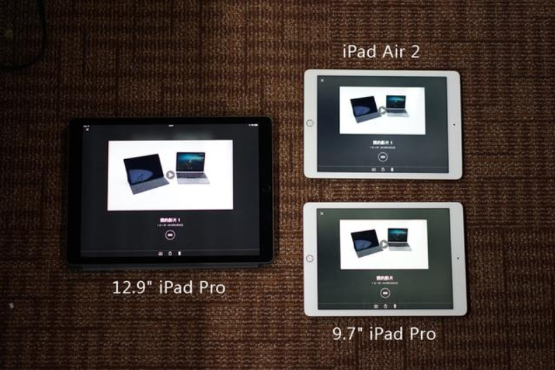
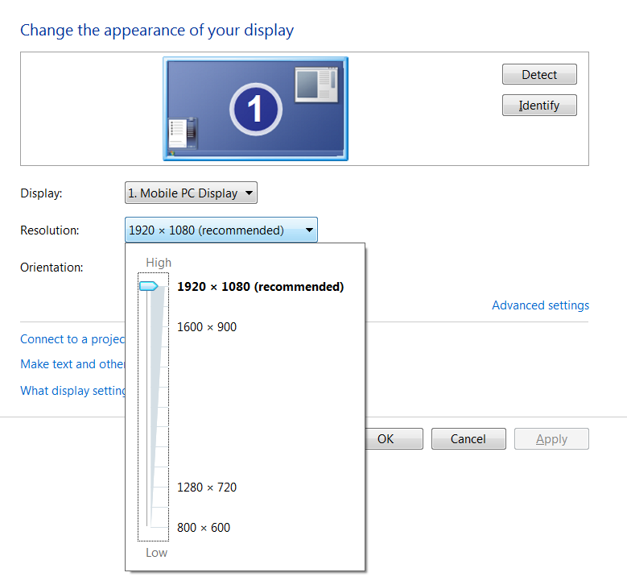
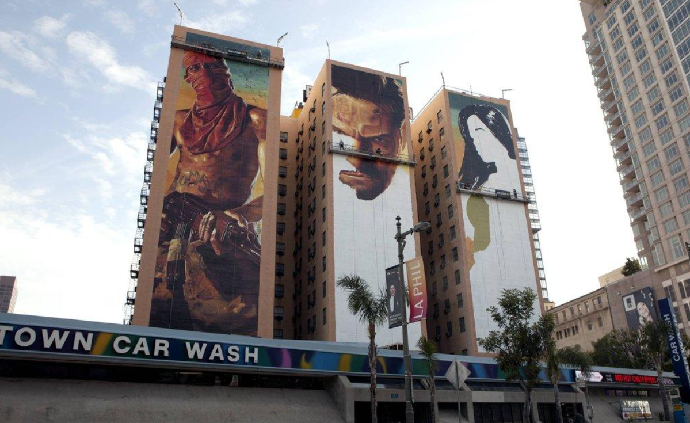
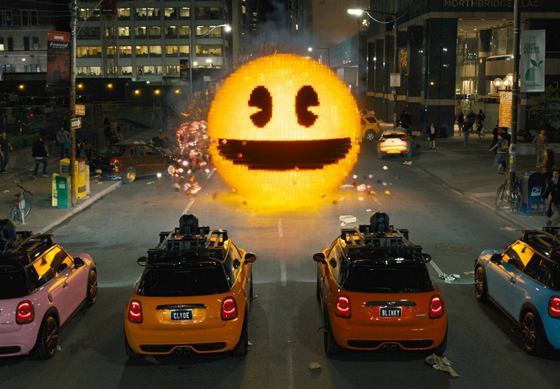
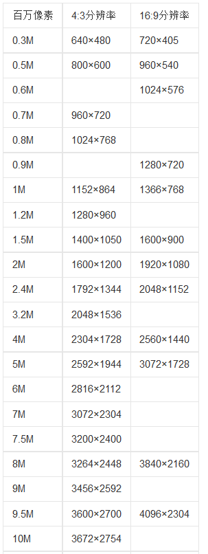
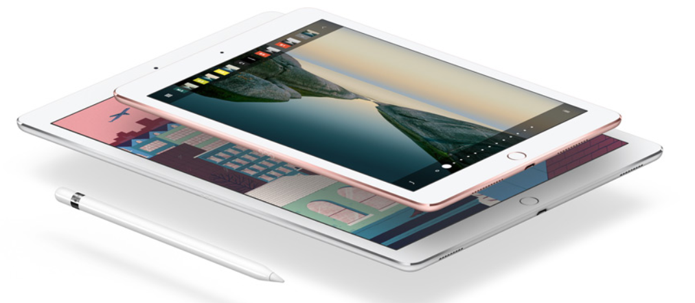

从选购ipad pro 9.7还是12.9的时候纠结于屏幕显示分辨率一事开始，觉得自己对分辨率的理解好像不是很科学，所以花了点时间具体的了解了一下现在分辨率的一些知识，随笔似的记录下来，有一点乱，但是以后也还可以回顾回顾。

生日那天(4.1)入手了一个最新的ipad pro 9.7，在选购的时候纠结了阵到底是买这个新上市的9.7还是买之前的旧版的大ipad pro 12.9。在比较的时候有一个原因让我放弃了12.9，就是它的分辨率是2732*2048的，而目前9.7寸的ipad的分辨率都是2048*1536。为什么分辨率更高的12.9反而成了我放弃的理由呢？因为目前绝大多数的App和网页设计都还没有达到2732*2048的分辨率，那么在12.9寸的 ipad pro上的显示是通过等比例放大的，显示效果就会显得不够清晰反而使得体验下降。我这样的理解到底是不是正确呢？那么今天就一起来学习一下分辨率的相关知识吧。

生活中，人们对分辨率最直观的了解就是分辨率越高的就看得越清楚，越低的就越模糊。其实这里面有一个误解。我们来稍微解释一下就能明白了，我们现实生活中看到的图像一般可以分为两类，一类是直接展现在我们面前的实物，如打印出来的照片，海报等等，还有一类是通过显示器展现在我们面前的，如电脑，电视等等。所以我们在说分辨率的时候需要注意我们说的是实物的分辨率还是显示器的分辨率。举个例子，假如我们的相机里拍了一张1024*768的照片，我们去照相馆洗照片的话老板总是要问你洗几寸的吧？而且很显然在1024*768这个分辨率你是无法要求老板洗一个清晰的一幢楼那么大的巨幅海报出来的吧？同样把这张照片放到电脑里通过显示器来显示的话，如果显示器的分辨率只有800*600，那么按1比1的显示的话，照片在这个显示器是显示不全的吧？而如果显示器的分辨率为2048*1536，那么应该同时可以显示两张这样的照片没有问题吧？而如果要用一张这样的照片充满这个显示器的话，那么就像刚刚巨幅海报的例子一样，应该是显示不清晰的吧?

由此可见，分辨率可以从显示分辨率与图像分辨率两个方向来分类。显示分辨率（屏幕分辨率）是屏幕图像的精密度，是指显示器所能显示的像素有多少。图像分辨率则是图像单位英寸中所包含的像素点数。既然说到了像素点，而且生活中到处会听到和用到像素这个词，那么我们先来了解一下什么是像素点吧。
像素往往和数码显示和数据摄影在一起提到，从定义上看像素是指基本原色素及其灰度的基本编码，不太容易理解，我们可以简单的把像素就理解为图像显示的一个基本单位，一个像素点就显示一种颜色，而具体可以是哪种颜色呢？这取决于我们的像素的位深度，我们以RGB位图为例来说明一下(RGB代表红，绿，蓝三种基本颜色，位图指的就是由像素点构成的图片)，那么如果我们说一个8位图，那么意思是RGB这三种颜色每一个颜色都用8个位来表示，每一位对应计算机里要么是0，要么是1，那么每一个颜色就有2的8次方，也就是256种可能。那么一个像素点所表达的颜色的可能性就是256*256*256种。这个可以只是了解一下啦，不是专门从事图像处理相关工作的只需要了解到一个像素点就是一个很小很小的颜色点就可以了。

分辨率的单位我们经常会看到也容易费解的就是有以下描述方法，一种是多少乘以多少，比如2014*1536，一种是多少万像素，如1200万像素。这些描述有什么不同呢？我们看下面这张表。

第一列就是我们经常在买相机，手机或平板电脑时候提到的摄像头的像素。比如说1000万像素的摄像头，那么默认情况下它所拍摄的照片的分辨率就是3672*2754的。那么3672*2754又是什么意思呢？这个意思也很简单，就是表示横着方向上有3672个像素点，竖的方向上有2754个像素点。同样的道理，如果说一个屏幕的分辨率是 2048*1536表示的意思就是这块屏幕可以显示的范围是横着2048个像素点，竖着1536个像素点。另外有些地方还会看到分辨率的单位是PPI，这又是什么呢？它指的是每英寸的像素量。PPI的值越大，表示单位尺寸所能表达的颜色越多，感觉就越清晰。PPI的计算公式为：
所以到这里我们可以了解到，想要得到清晰的视觉体验，屏幕给力是必须的，假如忽略屏幕的大小，通过PPI这个单位就可能看出一个屏幕所能展现的图像细节。
有时候我们把一幅图片尽量的放大，我们会发现它越来越不清晰，直到最后看到的是一块一块的点，我们会叫这样的点为像素点。这是怎么一回事呢？举一个简单一点也极端一点的例子吧。我们的图片比如说是1010，我们的显示屏也是1010，PPI也是一样的比如说是10ppi。那么在不做任何放大处理的时候，在屏幕上显示这个图片的效果刚刚好，用屏幕的一个像素点显示图片的一个像素点，显示的大小差不多是1英寸。接着假如我们放大图片为2英寸，这样的放大图像的分辨率是不会改变的，还是1010，但是尺寸大了一倍，那么这个时候屏幕还是10ppi，而图片就变成5ppi了，照这样的过程再放大图片，直到图片为1ppi，这个时候在屏幕上显示的就只 是一个像素点了。所以说，一像素点的大小，取决于图片的尺寸和分辨率，当图片的尺寸很大，而分辨率很小的时候，我们就可以轻易的看到像素点。比如我们用熟悉点的厘米为单位，10PPC吧，表示每厘米10个像素点，那么一个像素点就是一毫米，肉眼已经可以看出来了。如果是10PPC的分辨率要显示一个2048*1536的照片需要多大尺寸呢？代入上面的公式，2048的平方加上1536的平方为4194304+6553600 = 10747904，平方根后为3278。那么对角线长度为3278/10=327.8厘米，超过三米才能显示的下去，而且这个时候要站远一点才能看上去比较清晰。
再举一个例子，在苹果的ipad pro出来之前有人提前了解到了ipad pro的显示屏幕的分辨率是264ppi，显示效果是2732*2048，那么就能推算出来其尺寸基本为12.9英寸。

感觉还是讲的有点乱，最后总结一下吧，简单一点。在谈到分辨率的时候我们要先分清楚是在谈显示屏的分辨率还是在谈摄像头的分辨率又或是在谈的图片的分辨率，而反映到生活中我们眼睛看到的是不是够清晰，最理想的状态当然是图片和显示屏的分辨率和尺寸都正好1比1匹配，或者图片分辨率可以大于显示器，这 样还能保持清晰但是有一些细节就相应的缩小了，反之，如果图片的分辨率小于显示屏，那么这个时候就会觉得不够清晰了。